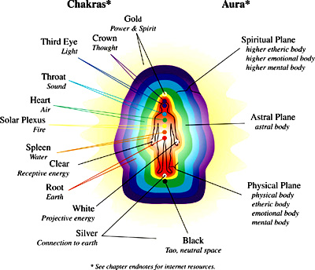
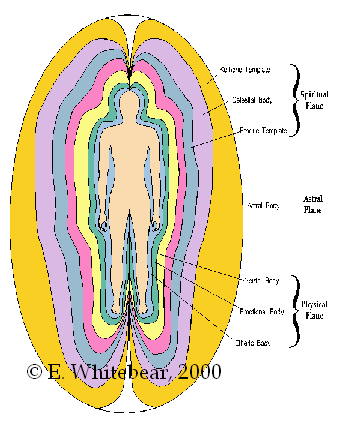
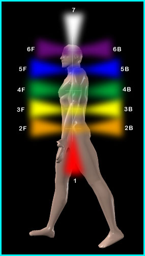
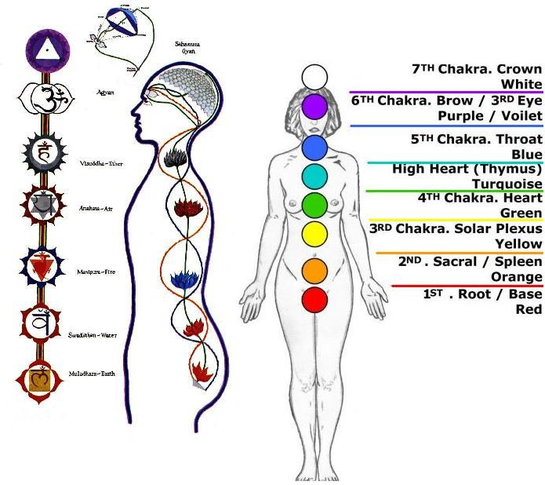
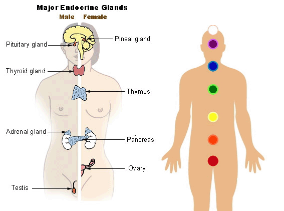
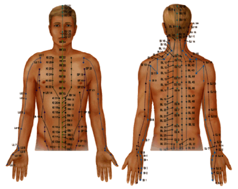

ENERGY SYSTEM IN THE HUMAN BODY

Among the great and innovative things that God has bestowed upon us and on the
rest of the living entities, is a unique energy system.
The human being's body, which is our main concern, is not only what we can see
by the naked eye, but also an invisible system supplying the whole body with
energy. Special cameras could study and take an image reflecting the status of
the energy system in any living object.
The Almighty wisely created the energy system within the human beings' body, to
protect the physical body from harmful (negative) universal energy surrounding
it. The energy system supplies the whole body with energy, the essence of
life.
The energy system in the human body consists of:
-AURA
-CHAKRAS
-MERIDIANS
The AURA :

Aura is the electromagnetic field of energy that surrounds the human beings' bodies or any living entity. Aura is composed of many layers. Each layer has its own specific function that distinguishes it from the other layers.
Generally speaking, the importance of the aura lies in the fact that it protects the body and its cells from the negative universal energy surrounding us. It supplies the body with the positive energy and prevents the harmful (negative) energy to penetrate the body.
Also, the aura could be described as a fingerprint; no humanbeing's aura
looks alike. Moreover, the aura’s colours, density and shape vary within the
same person depending on his /her psychological mood. An Aura's shape differs
from mood to mood, like happiness, sadness, relaxation and anger. It is more
important to mention that the health status has its own obvious impact on a
person’s aura.
Many equipment and cameras have been invented to capture images of an aura. Any ordinary person
can see the aura with his/her naked eye by practicing certain and regular
exercises.
It is noteworthy to say that the aura can explain the phenomenon of attraction
or repulsion at first sight. We usually say that a person is amiable, attractive
or unbearable without making their acquaintance. This is because we have two
types of auras; attractive and repulsive. Upon meeting somebody, interference
takes place between your aura and the other person's aura, then a kind of
interaction between the vibrations in both of them take place, resulting in
either repulsion or attraction between you and the other person.
CHAKRAS:

Chakra means “wheel”. It is referred to as such because of its spiral movement. Chakra receives and radiates energy. It also moves and distributes energy to the whole body through the Meridians.
The human body has seven major chakras and twenty- two minor chakras distributed
along the human body. The seven
major chakras are stipulated as follows:

Charkas act as a station to send and receive energy. The importance of those charkas lies in the fact that each chakra is connected with a major gland and a neutral network.
If we have a look at the chakras locations, we will notice that they are
located along the major endocrine glands that play an important role in the
human body i.e. pituitary, pineal, thyroid, pancreas adrenal and prostate
glands. It is important to say that
even the chakras themselves are
connected via a channel functioning as a supplying line to distribute energy
all over the body. This channel extends from the first to the last chakra to
ensure a good energy distribution to the area in need of energy.

The chakra looks like a funnel, it is narrow at the bottom and wide at the top. Each chakra has got a color that varies in accordance to the energy vibration and its speed.
Therefore, the divine innovation is clearly reflected on the choice of the
chakras location, as the endocrine glands play an important role in the
human body. The function and the development of those glands are very
important to lead
a healthy life, as the
hormones that are secreted by those glands, determine the size of the human
being's mental and emotional mood. Also those glands have control over our
energy, activity, psychological security, and our biological process.
Moreover, those glands have their impact on our actions, present conditions,
body shape and mentality.
Accordingly, the chakras play a major role in stimulating those glands and
supplying them with energy and keeping them intact and active. For the
reasons mentioned above, we realize how important Reiki is. When the healer
stimulates the chakras he/she automatically stimulates the glands and
restores the energy to ensure a good health to the rest of the body.
THE MERIDIANS (ENERGY FLOW PATHWAYS
:)

Meridians are channels acting as a medium to transfer energy throughout the
organs of the human body. They look like arteries and veins that transfers
blood.
Meridians extend from the head to foot, and they reach up to fourteen meridians. Each meridian has a certain name and they could be studied from "Energy Anatomy Science" perspective.
Anatomy is not only exclusive to human body organs, it also includes energy.
Besides, meridians are not only exclusive to the human being bodies, but
also include mammals like cats, dogs, horse and so on.
Health troubles start taking place upon the blockage of one of the
meridians. A blocked meridian leads to the impedance of the energy flow
within the organs connected with it. This is similar to an infarction or a
clot befalling one of the arteries, what happens in the case of a meridian
blockage is the same. Energy flow stops or gets weak depending on the degree
of the blockage. This leads to an insufficient supply of energy to the
organ, causing health problems pertaining to all organs connected to the
blocked meridians.